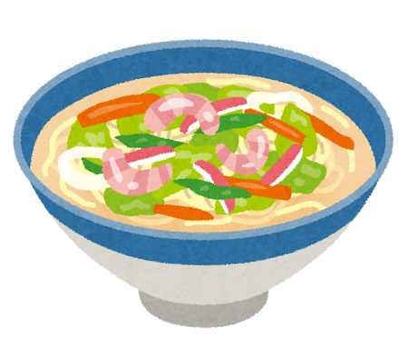
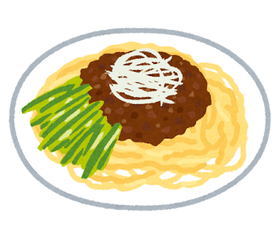
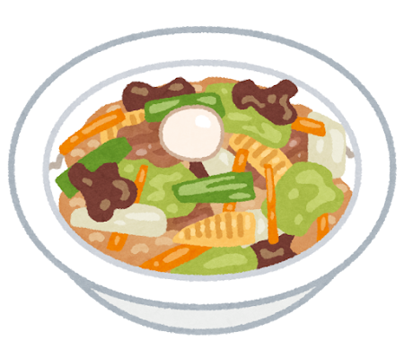
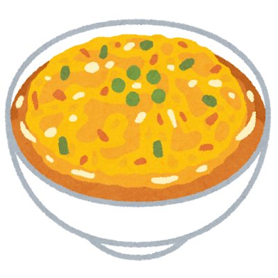

Wonton Soup and Chinese Noodle Traditions

Wontons: Clouds in Broth
The word wonton (餛飩, huntun) translates poetically as “swallowing clouds” — a name that perfectly describes these delicate dumplings floating in clear, fragrant broth. Wontons date back over 2,000 years to the Han Dynasty and were originally eaten during the winter solstice.
Cantonese wontons are perhaps the most refined: thin-skinned parcels filled with shrimp and pork, served in a light superior stock with springy egg noodles. In Sichuan, chao shou (抄手, “crossed hands”) are bathed in fiery chili oil. Each region shaped the wonton to its own character.
China s Noodle Heritage
China is the birthplace of noodles. Archaeological evidence from the Lajia site in Qinghai Province revealed a 4,000-year-old bowl of noodles made from millet — the oldest known noodles in the world.
Each region of China developed its own noodle tradition:
- Lanzhou hand-pulled noodles (兰州拉面) — a Muslim tradition from Gansu Province, where dough is stretched and folded into thin strands in seconds
- Dan dan noodles (担担面) — Sichuan street food carried on shoulder poles, with a spicy, numbing sauce
- Zhajiangmian (炸酱面) — Beijing s signature noodle dish with thick soybean paste sauce
In Japan: Chanpon and Jajamen
Chinese noodle traditions deeply influenced Japanese cuisine. Chanpon from Nagasaki, loaded with seafood and vegetables in a rich pork broth, was created by a Chinese restaurant owner to feed Chinese students affordably. Jajamen in Iwate is Japan s adaptation of zhajiangmian.




Chinese noodles are not one tradition but a thousand — each bowl a map of its region, its climate, and its people.